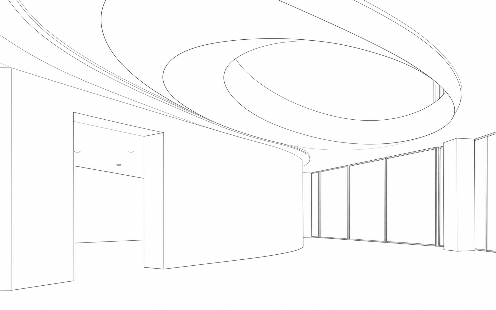

Ілюстративна сценаЕскіз геометрії
Складні форми.
Точне виконання.
Монтуємо стелі й перегородки.
Готуємо поверхні та фарбуємо.
Форму тримає
каркас.
Профілі задають геометрію.
Обшивка перетворює її на площину.
Потім —
сам простір.
Виконуємо стелі, перегородки й чистове оздоблення за вашим проєктом.
Переглянути послугиWWM · Познань, ПольщаДо послуг